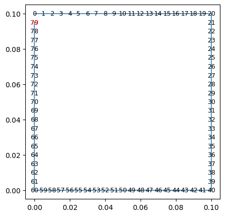
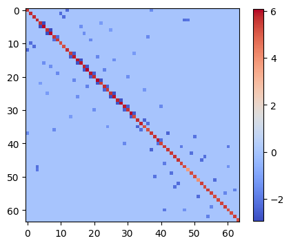
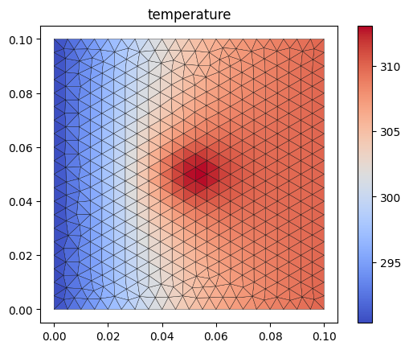

[1]:
import numpy as np
from nfvm.mesh.triangleMesh import TriangleMesh
from nfvm.field.volField import volScalarField
import nfvm.fvm as fvm
import nfvm.fvc as fvc
import matplotlib.pyplot as plt
4.1.5. 源项热平衡问题：显式源项
4.1.5.1. 加载点和控制体
[2]:
mesh = TriangleMesh.load("../../resources/laplacian/heatCavity_tri/mesh/heatCavity.nfvm")
mesh.showBoundary(pause=False)
从文件 ../../resources/laplacian/heatCavity_tri/mesh/heatCavity.nfvm 加载网格信息 ...
文件版本：0.1.0
初始化 TriangleMesh ...
初始化 TriangleMesh 成功

4.1.5.2. 构造一个温度场
[3]:
# 构造一个边界条
k, b = np.ones(80), np.zeros(80)
# 20-40温度为310
k[20:40] = 0.0
b[20:40] = 310.0
# 60-80温度为300，
k[60:80] = 0.0
b[60:80] = 290.0
# 0-20&40-60为绝热条件（0梯度条件），默认的 k=1.0, b=0.0就是0梯度
[4]:
# 构造一个温度场并指定初始值
CN = mesh.cn
T = volScalarField("T", mesh, value=np.ones(CN)*300.0, boundary_dict={'k': k, 'b': b})
4.1.5.3. 构造一个源项
[5]:
q = volScalarField("q", mesh, value=np.zeros(CN))
# 下半部分为5
for i in range(mesh.cn):
cx,cy = mesh.cell_center[i, :]
r = ((cx-0.05)**2 + (cy-0.05)**2)**0.5
if(r<0.01): # 中心热源
q[i] = 1000*100
4.1.5.4. 使用拉普拉斯算子构造稀疏矩阵
[6]:
mat = (fvm.Laplacian(T) == fvc.Source(q))
[7]:
# 可视化稀疏矩阵
plt.figure(figsize=(5,5))
plt.imshow(mat.csr.todense()[:64,:64], cmap='coolwarm')
plt.colorbar(shrink=0.8)
# plt.savefig('sp-mat.png', dpi=150, bbox_inches='tight')
plt.show()

4.1.5.5. 求解稀疏矩阵
使用scipy.sparse.linalg模块的spsolve函数求解稀疏矩阵。
[8]:
x = mat.solve()
[9]:
# 将计算结果写出到文件中
T.value = x
# T.writeVTK()
[10]:
import matplotlib.tri as tri
[11]:
X = mesh.points[:,0]
Y = mesh.points[:,1]
triangles = mesh.cells
[12]:
fig, ax = plt.subplots()
ax.set_aspect('equal')
tpc = ax.tripcolor(X, Y, triangles, facecolors=T.value, cmap='coolwarm', edgecolors='k')
fig.colorbar(tpc)
ax.set_title('temperature')
plt.show()
